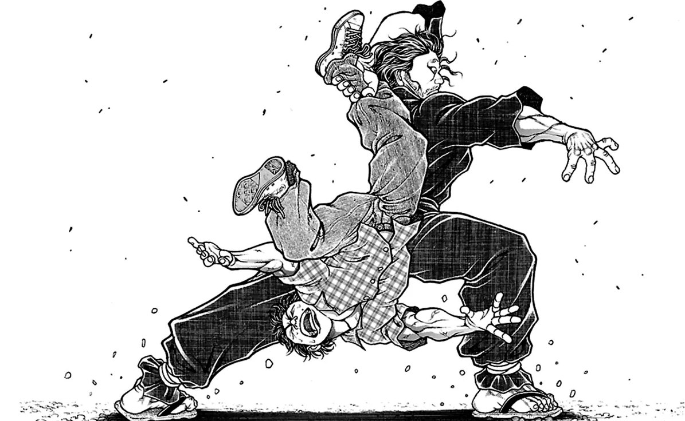

TWO HEAVENS AS ONE
Every duel he ever fought was already over before the first step — he spent sixty-one duels proving that the cut is thrown before the sword moves, and he came back to prove it a sixty-second time.

TWO HEAVENS AS ONE
Every duel he ever fought was already over before the first step — he spent sixty-one duels proving that the cut is thrown before the sword moves, and he came back to prove it a sixty-second time.
Feature map
Level-by-level features, as the figure refined them.
Niten Stance
Bonus action · 1 CE · 1 minute (ends if you are incapacitated).
Tier IV · Striker · suggested CE ability DEX · Primary verb: Conclude. The duel is not an event. It is a decision. Two Heavens as One treats every exchange as already concluded: the long sword is the decision, the short sword is the action — two heavens, one cut.
You enter the Two Heavens stance. While in this stance and wielding a melee weapon in each hand, your melee weapon attacks deal additional damage equal to your proficiency bonus. (The two swords are not two weapons. They are one cut, made from two directions.)
The Answering Cut
Reaction · no CE cost · once per turn.
When a creature misses you with a melee attack, you may make one melee weapon attack against that creature. (The miss was the trigger. The cut was already decided.)
Read the Rhythm
Bonus action · 2 CE · 1 minute (ends if you mark a different creature).
Mark one creature you can see within 60 ft as your Duelist. Your weapon attacks against your Duelist deal an additional 1d8 force damage, and your Duelist cannot surprise you. (You have read its rhythm. The conclusion is a formality.)
Ganryū's Crossing
Bonus action · 1 CE.
Move up to your speed toward your Duelist. This movement does not provoke opportunity attacks. (The tide carries you. You were never late — you were timing it.)
Refined Simple Domain: The Duel Already Concluded Simple Domain
Bonus action · 5 CE · 1 minute (concentration).
You project a 15-ft radius simple domain centered on yourself — a circle of cut air, disclosed to all within. While it stands, three binding rules hold, witnessed by Heaven: 1. No Second Blade. No attack, effect, or technique originating outside the domain can target or affect anyone inside it. (The duel is between two. There is no audience.) 2. The Conclusion. When a melee attack misses you inside the domain, your Answering Cut against the attacker deals an additional 2d8 force damage. 3. One Duelist. When you activate the domain, name one creature inside it as the Duelist. That creature cannot willingly leave the domain's radius while the domain stands. (The duel must conclude.) You may dismiss the domain as a free action. The rules are disclosed — a creature that understands them may choose to fight accordingly. Heaven does not negotiate the rules.
The Oar Suffices
Passive.
Any object you wield counts as a longsword you are proficient with. Your weapon attacks ignore resistance to slashing, piercing, and bludgeoning damage (not immunity). (He killed the finest swordsman of a generation with a boat oar.)
Mushin (No Mind)
Passive.
Your Answering Cut no longer requires your reaction — it still triggers only once per turn. (There is no decision, and then action. There is only the cut.)
Ichi-go Ichi-e
Passive.
When you reduce a creature to 0 hit points with a melee weapon attack, you may immediately move up to half your speed without provoking opportunity attacks. (One moment, one meeting. The duel ends; the next begins.)
Two Heavens as One, Perfected
Passive.
While in Niten Stance: your weapon attacks score critical hits on a roll of 19–20; your Answering Cut deals an additional 2d8 force damage; and when you take the Attack action, you may make one additional weapon attack as part of that action. (Decision and action have collapsed. There is only the cut, arriving before it is thrown.)
Maximum, Domain, or equivalent.
Capstone material.
Iai: The Single Stroke
Move up to 30 ft to a creature you can see — this movement does not provoke opportunity attacks — and make one melee weapon attack against it. This attack scores a critical hit on a roll of 18–20. On a hit, it deals an additional 8d10 slashing damage. On a miss, it still deals half of the additional damage. (One stroke. The duel, concluded.)
Ganryū Island: Where the Oar Fell
The island at dawn. The tide. The carved oar. Inside this domain, the three binding rules of your Refined Simple Domain hold across the full radius — and the sure-hit is The Cut Cannot Miss: your Answering Cuts inside the domain always hit. Additionally, inside the domain your Answering Cut may trigger up to twice per round. (Sixty-one duels. Sixty-one conclusions. This is the sixty-second.)
- Clash points
- 800
- Burnout
- 5 rounds
- Duration
- 2 minutes
- Radius
- 30-ft radius
- Activation ✦
- full-turn action
- CE cost ✦
- 20
✦ Canon: figure Domains are Specific Domains — the stated profile governs, not the player point-unlock table.
The Cut That Arrives Before It Is Thrown
When you roll initiative, you may immediately resolve Iai: The Single Stroke against one creature you can see, at no CE cost, before the first turn of combat begins. (The duel was concluded before the first bell. Your body is simply walking through the conclusion.)
Build-defining options.
Historical-figure techniques grant no feats — the figure's art is complete as written, and the builder's feat picker excludes these techniques. Take the progression as the build.
Edge cases and shared systems.
Campaign canon notes